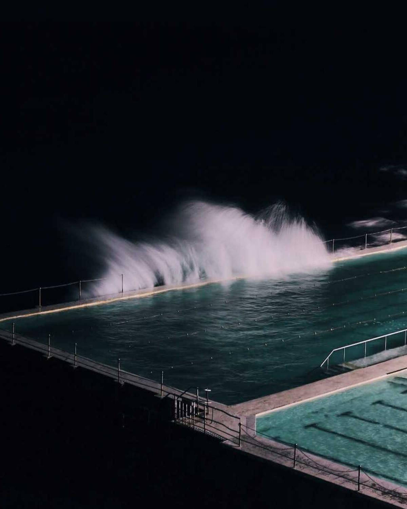

Endemol
UX and engineering lead for multilingual content systems and international entertainment platforms.
Marco explores ambiguous product problems until a clear, buildable system comes into view.
Open a channel
Depth 0027At depth, noise disappears. The real structure of the problem gets easier to see.
Marco works at the seam between intent and interface. Research maps the terrain. Prototypes test the pressure. Production code exposes weak assumptions early. The final product is not simply attractive. It has a reason for every choice and a system capable of carrying the load.
UX and engineering lead for multilingual content systems and international entertainment platforms.
Led global prototyping teams, personalization and rebrand work, scalable process, and senior prototyping talent.
Built high-fidelity prototypes for Cloud AI, Assistant, and Android to turn product debate into evidence.
Designed mobile, voice, and personalization systems through a large retail transformation.
Shapes cart, checkout, wallet, account, and self-checkout while advancing generative AI practice.
An independent product lab for AI tools, utilities, games, music, video, and weekly experiments.
Voice, agents, model behavior, and ambient assistance treated as interaction material from the first sketch.
Working systems that connect product intent to technical reality.
From ambiguous brief to first release, with the team equipped to continue.
Private journaling that preserves the writer's own voice.
A tailored resume without robotic language.
Realtime ChatGPT voice on your wrist.
Claude Code and Codex usage in the Mac menubar.
Food logging by voice or photograph.
Eighteen shipped products across tools, games, music, and video.
Share what you are building, what remains unclear, and the timeline. Marco will help map the route from pressure to product.